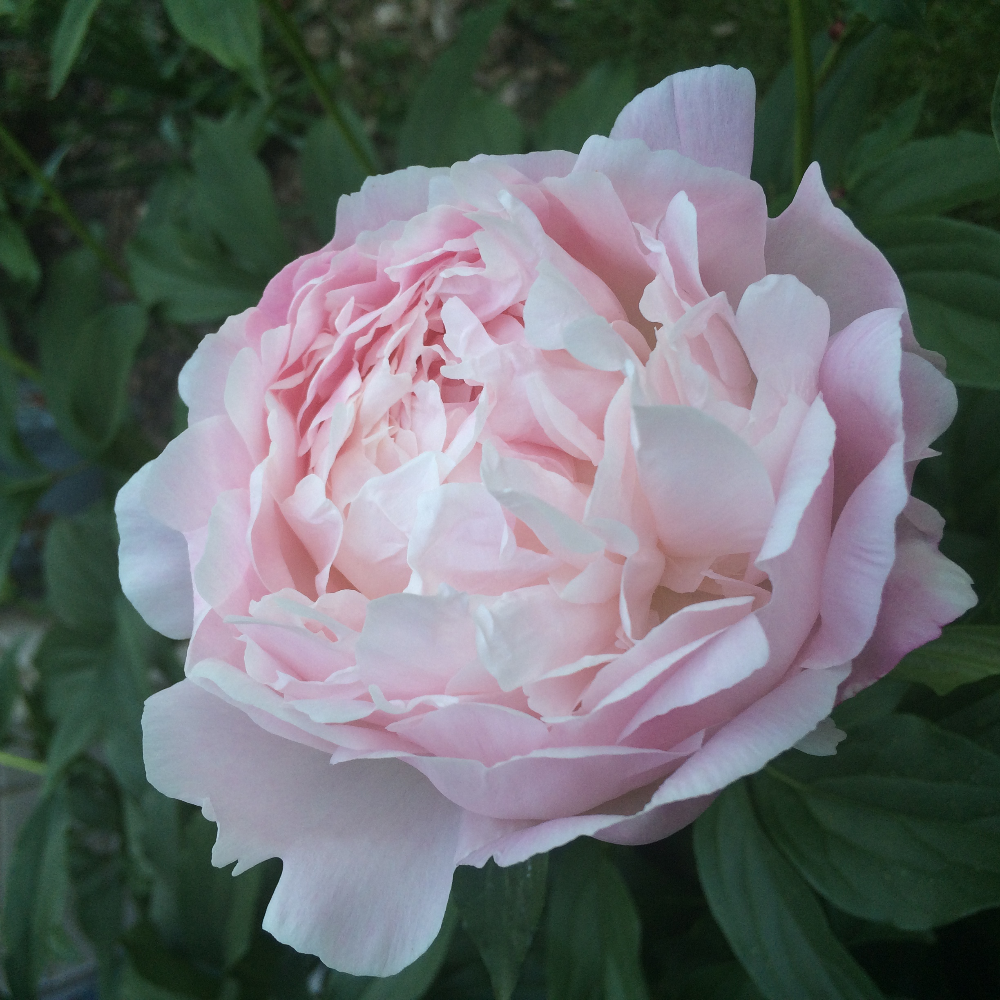

This section contains a list of some of the flowers I find captivating. The flower pictured above is a peony. It is a gentle and elegant bloom. I also included a few fascinating facts and personal thoughts about each listed flower below. I like quite a few, so this list is not necessarily exhaustive. I tend to be attracted to either unusual shapes in the petal structure and/or unusual colors. Therefore, some of these may end up looking very similar to each other while also being relatively different from the blooms most can find at their local flower shop. Without further ado, here is a list of my favorite flowers:
- Bleeding Heart: These flowers are native to both Asia and North America, and their binomial name is the Lamprocapnos spectabilis. These heart-shaped flowers dangle in rows from arching stems. Spring is their season of bloom, and a fun fact is that they are highly toxic to both humans and animals. They are also members of the poppy family.
- Skeleton Flower: The binomial name for the skeleton flower is Diphylleia grayi, and they are native to Japan. These flowers are generally white with six petals per bloom, and it bears indigo colored fruits. The name comes from the fact that the petals turn translucent when they come into contact with water. This eerie and ethereal effect is the primary reason I am interested in this flower. Interestingly, crude extracts from this flower were found to have anti-tumor effects on some animal tumors.
- Wisteria: Wisteria is actually the name of the genus of a group of plants in the legume family. There are many species that have different origins spanning across Asia and North America. When flowering, these plants can have a bright violet color with petals that droop down in clusters from tree branches. The seemingly magical vibrancy of these flowers is why they are on this list. Despite their beautiful appearance, Asian wisterias are highly invasive and poisonous.
- Spider Lily The red spider lily is also known as the Lycoris radiata, and it is native to Asia. The genus actually shares a name with two other plants that are colloquially known as spider lilies, but this species is my favorite. This is because of their vibrant crimson hue. Most spider lilies also have long, string-like petals that extend outward from the center of the bloom. To some people, this resembles spider legs. Although I have a deep dislike of insects and arachnids of all kinds, this flower holds a special place in my heart.
- Black Bat Flower: Tacca chantrieri is the binomial name of the black bat flower, and it is native to southeastern Asia. The flower itself looks rather odd in comparison to others on this list. It has both wide and string-thin petals, and the dark colors are similar to the ones seen on rotting vegetation. Its name comes from the fact that the wide petals look like bat wings, while the thin petals look like whiskers or insect-like legs. Some may even say it looks unappealing, but I think there is beauty in its chaotic makeup. This flower is also known to be used in traditional Chinese medicine.
- Ghost Orchid: The American ghost orchid is also known as the Dendrophylax lindenii. There is also a Eurasian variety, but my heart prefers the species that is native to Cuba and Florida. It is a leafless flower that has oblong white petals. These petals start wide and then taper off to thin points that almost look like antennas. Unfortunately, this species is endangered.
- Lily of the Valley: Otherwise known as the lily of the valley, the Convallaria majalis is native to Asia and Europe. This is perhaps the most common and widely-loved flower on this list. In my opinion, this flower's fame is well-deserved. The delicate white bells hanging from the pale green stem are a serene scene. Additionally, its sweet scent and rarer pink varieties are wonderful to behold.
- Moon Flower: This plant has a plethora of names, but the binomial name is Datura stramonium, and it is native to Central America. It is actually considered a toxic weed! This distasteful denotation is further evidenced by their spiky, jackfruit-like seed capsules. However, the flowers this plant bears are a stunning white shade. The petals gather together to form a star-like shape with their curled tips, which is the reason why I find this bloom fascinating.
- Foxglove: The Digitalis purpurea is the specific name of the foxglove species I adore. It is relatively common in many gardens today, but it is native to Europe. It is a tall plant that has a row of bell-shaped blooms that taper off as the plant grows towards the sun. A soft magenta hue is the primary color of choice for these flowers, but the color range also includes various shades of pale pink and white. The quiet elegance of these flowers first enthralled me many years ago.
- Jade Vine: The binomial name of the jade vine is Strongylodon macrobotrys, and it is endemic to the Philippines. It has a brilliant turquoise hue with claw-shaped flowers that gather in tapered-off clusters. The vines and stems holding up the petals can take on an indigo hue, and all these delightful colors make me enjoy the jade vine even more. This plant needs a tropical environment to thrive, which makes it difficult to obtain casually. Interestingly, this plant is one of the few edible ones on this list.